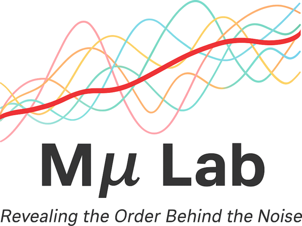
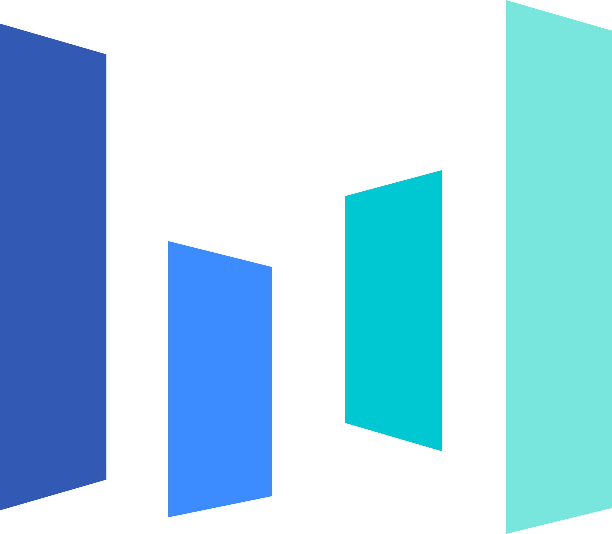

D1Base — 双栏渐变线 + logo 车站 + 呼吸灯 + 时间渐淡（基准）
Experience

Research Intern · Mμ Lab, PKUAdvised by Prof. Muhan Zhang · Beijing
Algorithm Intern · ByteDanceSeed / Drug Design · Shanghai- Algorithm Intern · Anew LabShanghai
Education
- Beijing No.4 High SchoolMiddle School
 Peking University · YuanPei CollegeB.E. in AI + B.S. in Physics
Peking University · YuanPei CollegeB.E. in AI + B.S. in Physics